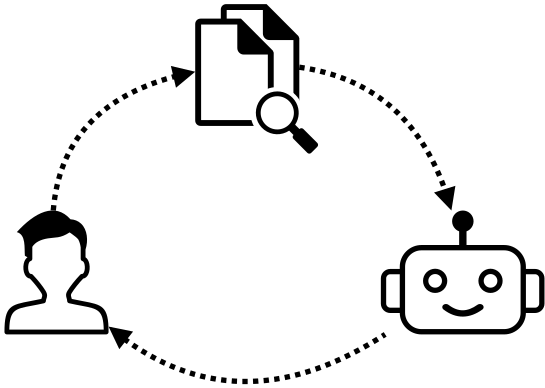

Unlocking AEC Insights with Graph RAG: A Hands-On Lab Session
Who are we?

Overall agenda
- Session 3.1 | 09:30-10:45
- Why?
- What tech?
- Hands on: Data processing
- Coffee break ☕
- Session 3.2 | 11:00-12:15
- Hands on: RAG
- Perspective and discussion
- Lunch ü•óü•ñüç¥
Why are we here?
The problem:
Information is trapped in silos, it's incomplete (or in multiple incompatible versions) and therefore hardly accessible
Library of
Trinity College Dublin
1991
World Wide Web
We need structure. Let's order the web by category!
All we need is a search bar!
Semantic
results
Semantic
search
The construction industry is still in the Yahoo age
Large Language Models
are changing the way we search
But what if I wish to search my own documents?
RAG
Retrieval-Augmented Generation
And what if I wish to search across multiple documents?

\( \rightarrow [-0.2, 0.1, \dots, -0.5, 0.1] \)
\[ \begin{bmatrix} 0.125 & -2.103 & \dots & -2.005 & 0.012 \\ 0.615 & -1.142 & \dots & 1.945 & -2.113 \\ \vdots & \vdots & \ddots & \vdots & \vdots \\ 0.712 & 1.153 & \dots & -1.721 & -0.852 \\ -0.925 & -0.903 & \dots & 1.044 & -1.412 \end{bmatrix} \rightarrow \]

And if I want to also include results from my CAD files, BIM models and tasks in my FM-system?
And what about information that constantly changes?
Graph RAG
At  we process
documents through a set of pipelines to establish the RAG
foundation
we process
documents through a set of pipelines to establish the RAG
foundation
In addition to vector embeddings we produce a Knowledge Graph
First we need to understand what a Knowledge Graph is
BiLT 2022 presentation
A graph is a network of nodes and edges

In a knowledge graph, the edges are directed

One node-edge-node relationship is called a "triple" and describes a "statement" or a "fact"

A triple consists of a Subject, a predicate and an Object
An example from a BIM model

As more facts are added, the object in one triple becomes the subject in another
Objects can also represent simple data properties

These graphs can grow to unbelievable sizes.
 consists of 9.5 billion triples!
consists of 9.5 billion triples!
https://bit.ly/48kp6l0
Data Processing
So now we know that we need graphs and Vector embeddings, but how do we build these?
TODO: quick introduction to what we will be creating here...
Notebook 1
Coffee break ☕
RAG and LLMs
Retrieval Augmented Generation &
Large Language Models
LLMs
- Base LLMs (like GPT-4) are very big Neural Networks, consisting of billions of parameters, that have been trained on vast amounts of data.
- However they haven't been trained on and don't have direct access to private (unseen) data.
3 Ways to Expose LLMs to Unseen Data
- Training a new LLM
- Fine-Tuning an existing LLM
- Performing Retrieval Augmented Generation (RAG)
LLM Training & Fine-Tuning Challenges
- Costs
- Complexity
- Updating problem
- Poor/No information access control
Retrieval Augmented Generation
In simple terms, RAG describes a setup through which an LLM is provided with direct access to information relevant to the user's question, which is not part of the training data.
RAG Benefits
- Splits information retrieval from text generation
- Very cheap and fast to update
- Allows more explicit control on information access
- Scales efficiently
Training & RAG
Training / Fine-Tuning

RAG
Base RAG
Base RAG Architecture
Processing
Text-Heavy Documents
Processing
Multimodal Documents
Processing
Basic Principle
\( \rightarrow \)
\( f : \)
simple chunking function ...or a deep neural network
Embeddings
\( \rightarrow [-0.2, 0.1, \dots, -0.5, 0.1] \)
\( f : \)
deep neural network trained to produce vector representations of the input data
Vector Database
\[ \begin{bmatrix} 0.125 & -2.103 & \dots & -2.005 & 0.012 \\ 0.615 & -1.142 & \dots & 1.945 & -2.113 \\ \vdots & \vdots & \ddots & \vdots & \vdots \\ 0.712 & 1.153 & \dots & -1.721 & -0.852 \\ -0.925 & -0.903 & \dots & 1.044 & -1.412 \end{bmatrix} \rightarrow \]
Storing vectors along with metadata and content
Searching
Embedding a query and calculating its distance (eg cosine) to the other data points.

K Nearest Neighbors (KNN) as the search result
Indexing
Speeding up retrieval by pre-calculating communities.

Approximate Nearest Neighbor (ANN)
Response
The LLM is now provided with the search results as additional context to produce a response to the user's question.
Instructions
"Given the context provided answer the question as an assistant that..."
Question
"What is the main entrance's corridor width?"
Context
- "search result 1"
- "search result 2"
- "..."
Response
Benefits of Base RAG
- Search is much more flexible and relaxed than traditional approaches.
- Great at answering specific/narrow questions.
- The sources used to answer a question are directly accessible.
- Straighforward and not complicated to maintain.
Limitations
- Not so great at answering questions that require a combination of different sources.
- Misses a global view on the data.
- Might miss exact matches.
RAG Hands on
Notebook 2
Perspective
The richer the input the richer the output

- Same entity represented in multiple contexts
- Different visual representaitions of the same entity
- Different historical versions of the same entity
How I finally got agentic RAG to work right